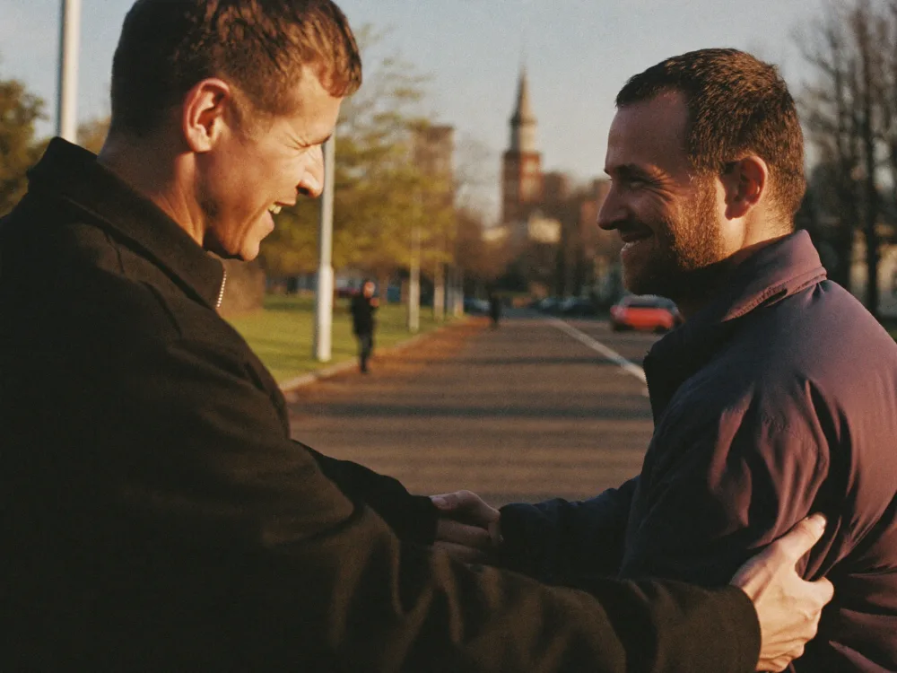
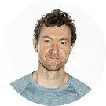

More meaning, stronger relationships, and a life that feels more alive.
Inspired by the Welsh word hwyl — the feeling of uplift that comes from doing something meaningful with other people — Hoyll is a facilitated peer group for founders and leaders who want more depth, clarity, and meaningful connection.
The feeling of energy, uplift, and connection that comes from doing meaningful work with other people.
Nobody can pronounce it. So we made it ours: Hoyll.
We've optimized supplements, routines, and calendars while ignoring one of the single greatest drivers of health, happiness, and performance.
The real solutionTurns out, you don't need another collagen peptide or influencer protocol. You need a core crew of people like you to talk with regularly. Hoyll is that crew.
Hoyll is a facilitated peer group where carefully matched members meet every other week in small, trusted “Hoylls” to talk through real challenges, support one another, and leave with greater clarity on what matters most.
Consistent connection drives happiness and growth
We take the luck out of meeting and connecting with the right people. Every Hoyll is curated for life stage, goals, personality fit, and meaningful conversations.
6–8 person small groups
Carefully curated by experts — the right room, not a random one.
Facilitated bi-weekly sessions
Designed to go deep, not wide — 90 minutes that actually move things.
Clear decisions and next steps
Across work, life, and everything in between.
Connection isn't soft.
It's survival.
Strong social relationships are linked to a 50% higher chance of living longer.
An 80-year Harvard study found that good relationships best predict long-term happiness and health.
The Surgeon General warns that low social connection harms health like smoking 15 cigarettes a day.
How Hoyll is different
There are many ways to invest in yourself. Hoyll is different: it gives you a trusted room that compounds over time — the right people, the right structure, and a real cadence.
Swipe to compare →
| Hoyll | Therapy | Mentor / Coach | Mastermind | Courses | AI | |
|---|---|---|---|---|---|---|
| Trusted peer relationships | — | — | sometimes | — | — | |
| Professionally facilitated | sometimes | sometimes | — | — | ||
| Multiple perspectives, not just one | — | — | — | — | ||
| Covers life and work together | sometimes | sometimes | rarely | rarely | — | |
| Built for real accountability over time | sometimes | sometimes | — | — | ||
| Hand-picked for your goals and personality | — | — | sometimes | — | — | |
| Consistent cadence, not one-off moments | sometimes | — | — |
Hoyll doesn't replace therapy, coaching, or retreats. It fills a gap they generally don't: a trusted, recurring room of peers who help you think better, feel less alone, and build a life that feels more alive.
Curated, not crowded
Vetted community
Carefully vetted members aligned in values, life stage, and commitment — so you're with people like you.
Bi-weekly 90-minute sessions
Structured feedback and accountability with peers you respect — and genuinely enjoy supporting.
Members-only space
A private space to celebrate wins, ask questions, share resources, and stay connected between sessions.
Each 90-minute session is professionally facilitated and designed to help members think more clearly, go deeper faster, and leave with real momentum. Members bring a challenge, decision, or opportunity — and get honest perspective, trusted support, and clear next steps in return.
Getting started is easy
Apply
A short application to understand your goals, pace, and fit. No pitches, just clarity.
Match
We don't “dump you into a community.” We place every member into a curated Hoyll based on life stage, goals, pace, and personality fit.
Meet
Meet bi-weekly for 90 minutes with the same people, same time, same day.
Move
Turn insight into action. Decide next steps and get real follow-through from the group.
Hoyll is for you if…
You are successful on paper but still feel something is missing.
You crave depth and connection, not more superficial noise.
You want meaning, purpose, and a life that feels more alive.

You enjoy giving help and support as much as receiving it.
Join Hoyll
Hoyll begins with a 3-month commitment. After that, members can continue in 6-month extensions.
For busy professionals in high-responsibility executive roles who want to turn consistent, high-trust connection into better performance, clearer thinking, and greater personal and professional satisfaction.
- Vetted, premium member community
- 90-minute bi-weekly facilitated peer roundtables
- Clearer decisions, next steps, and accountability
For busy professionals in high-responsibility executive roles who want everything in Hoyll, plus more personalized coaching and accountability between group sessions.
- Everything in Hoyll
- Private 1:1 coaching every other week
- Added clarity, accountability, and follow-through
Every membership starts with the same application — we'll help you find the right fit.
We didn't start Hoyll to teach frameworks or sell advice. We started it because the most meaningful progress we saw came from having the right people in the room and going deep with them.

Dave Colina
3× Founder & CEO · Inc. 5000 Awardee · Community Builder
Markus Karjalainen
3× Founder & CMO · Community Builder · Avid Cyclist
“We were built in high-pressure environments. Now we're building the support we wished we had.”
Between us, we bring:
Fair questions.
The things people actually ask before they join.
Most peer groups are either too tactical (all business, no life), too vague (just “community”), or too inconsistent to create real trust. Hoyll is built around one core idea: consistent, high-trust connection is a performance lever.
Each group is professionally facilitated, meets on a reliable cadence, and follows a simple structure (CORE check-in, rotations, commitments) so conversations actually lead to clarity, action, and stronger relationships over time.
Every Hoyll is led by a trained facilitator who keeps the conversation focused, balanced, and useful. Their job is not to lecture or play guru. Their job is to create the conditions for a great room: trust, structure, depth, and accountability.
They help each member get heard, keep the group on track, and make sure sessions lead to clear next steps, not just good conversation.
We don't just drop you into a big community and hope for the best. We curate each Hoyll based on several factors like life stage, goals, pace, personality fit, and what kind of support you want right now.
The goal is simple: put you in a room with people you'll genuinely click with and respect, so trust builds quickly and the conversations are immediately useful.
Fit matters, and we take it seriously. If your group doesn't feel like the right fit, we'll work with you to understand what's off and place you in a better-matched Hoyll.